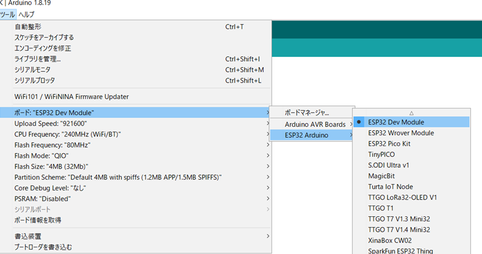
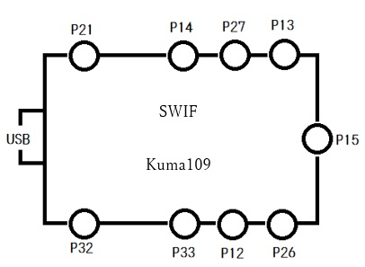
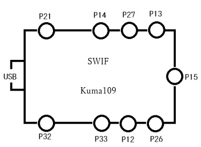
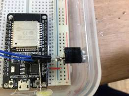

SWIF Kuma109
スイッチインターフェース クマイチマルキュー
2022-04-02更新
目次
１．製品仕様
２．材料調達先と費用例
３．開発環境セットアップ手順とマイコンへの書き込み方法
４．ESP32の使用PIN説明
５．PINとメスジャックの位置関係
６．スケッチ（ソースコード）
７．入力PINと出力キー変更方法
８．テスト環境と方法
９．参考文献＆資料とバージョンアップ構想
10．よくある質問風にトラブルシューティング事例
11. 作成手順
１．製品仕様
SWIF Kuma109はスイッチ入力機器の入力信号をキーボード入力信号に変換しiPadなどにBluetoothで送信するためのスイッチインターフェース装置です。
製品目の「SWIF Kuma109（スイッチインターフェース クマイチマルキュー）」には、
肢体不自由児の109キーボード（日本のPC多くは109か109Aキーボードを採用している）として、特別支援教育の10（と）9（く）、開発の経緯で参考とした「できiPadもどき」のMax10チャンネルへの敬意と完成品のモノラルジャック9チャンネルの10と９という意味が込められています。
|
項目 |
解説 |
|
製品名 |
SWIF Kuma109 |
|
チャンネル |
モノラルジャック9チャンネル（Max15チャンネル）+LED |
|
ソフトウェア |
オープンソース（公開）です。改変や機能追加が可能です。 |
|
マイコン |
ESP32(ESP-WROOM-32) 以下マイコンの仕様に準じます。 |
|
機能 |
iPad、Windows、Androidなどの製品を外部スイッチで操作できます。 |
|
対応 |
下記の製品ではご利用できません。 |
|
電源 |
ACアダプタやモバイルバッテリーなどでUSB MicroBから対入力します。 |
|
Bluetooth |
ESP32マイコン（電波法に基づく技術基準適合証明付き Bluetooth）を採用しています。ペアリングは1台のみです。 |
２．材料調達先と費用例
費用は、1個 約2,500円です。
なお、材料は同等のものであれば購入場所やメーカを固定する必要はありません。
|
SWIF Kuma109 (6個） |
|||||
|
1 |
秋月電子 |
抵抗内蔵５ｍｍＬＥＤ ５Ｖ 黄緑色 ５７０ｎｍ ＯＳＧ８ＮＵ５Ｂ６４Ａ－５Ｖ |
150 |
1 |
150 |
|
2 |
秋月電子 |
ブレッドボード・ジャンパーワイヤ（オス－オス） １０ｃｍセット |
180 |
12 |
2,160 |
|
3 |
秋月電子 |
３．５ｍｍモノラルミニジャック ＭＪ－３５５ |
50 |
54 |
2,700 |
|
4 |
秋月電子 |
ブレッドボード ６穴版 ＥＩＣ－３９０１ |
270 |
12 |
3,240 |
|
5 |
amazon |
Aideepen 2個 ESP32 ESP-32S |
1,960 |
3 |
5,880 |
|
6 |
100均 |
タッパー3個入 |
110 |
2 |
220 |
|
14,350 |
|||||
|
消耗品等 |
|||||
|
11 |
100均 |
固定ボンド3個入 |
110 |
2 |
220 |
|
12 |
100均 |
グルースティック |
110 |
1 |
110 |
|
13 |
amazon |
goot(グット) 高密度集積基板用 鉛入りはんだ Φ0.6mm スズ60%/鉛40% ヤニ入り SD-60 |
263 |
1 |
263 |
|
593 |
|||||
|
合計 |
|
||||
|
14.943 |
|||||
３．開発環境セットアップ手順とマイコンへの書き込み方法
SWIF Kuma109は開発環境として、Arduino IDE + ESP32-BLE-Keyboardライブラリ を使用しています。セットアップ手順は次の通りです。
①Arduino IDE（arduino-1.8.19-windows.exe）をインストールします。
②ライブラリESP32-BLE-Keyboard(ESP32-BLE-Keyboard.zip)をインクルードします。
③ESP32を使えるように[ファイル]→[環境設定]から追加のボードマネージャのＵＲＬにアドレスを入力します。
https://dl.espressif.com/dl/package_esp32_index.json
④[ツール]からボードを ESP32 Dev Module にします。

⑤プログラムをマイコンボードに書き込みます。
４．ESP32の使用PIN説明
ESP32のピンのうちSWIF Kuma109で使用するのは次の通りです。掲載以外のGPIOについてはPULLUP抵抗動作が不安定であったため使用していません。また、ボードメーカーの違いやケース内の幅の都合により入力を9チャンネルのみ使用します。ただし、下記のGPIOに対してプログラムの書き込み作業は行うので、物理的に入力PINを付け替えることで使用することは可能です。
スイッチ機器入力→BLEキーボードキー出力：
GPIO13, GPIO12, GPIO14, GPIO27, GPIO26, GPIO25, GPIO33, GPIO32, GPIO15, GPIO 4
LED点灯（Bluetooth接続している間）に使用：
GPIO 5
ウェイトモードで使用（キーを押して放した動作を１度行った後、指定時間(mm秒)入力を無効）：
GPIO18, GPIO19
ラッチ＆タイマーモードで使用（１度キーを押すと一定時間キーを押した状態を保持）：
GPIO22, GPIO23
出典：各種 ESP32 モジュールやRaspberry Piのピン配置 | そう備忘録 (souichi.club)
５．PINとメスジャックの位置関係
SWIF Kuma109のPIN設定(GPIO)は次の通りとなっています。
モノラルジャックの穴番号は、USBを左に見て反時計回りにジャック１－９としています。
初期設定では、スイッチ入力に対して穴番号と同じ数字キー入力がiPadなどに送られます。
例：ジャック１にスイッチ機器を接続してスイッチ入力したら、iPadにキーボードキー数字[1]が送られます。
P32=ジャック1 P13=ジャック6
P33=ジャック2 P27=ジャック7
P12=ジャック3 P14=ジャック8
P26=ジャック4 P21=ジャック9
P15=ジャック5
 alt="テキスト ボックス: SWIF
Kuma109
" v:shapes="テキスト_x0020_ボックス_x0020_24">
alt="テキスト ボックス: SWIF
Kuma109
" v:shapes="テキスト_x0020_ボックス_x0020_24">
ESP32-WOOM-32の物理的なピン番号の位置はメーカーによって異なります。ジャックとピンをつなぐ際は、ボードの表記や資料を確認しながらの作業をお願いします。
出典：ESP32-WROOM-32D開発ボードの仕様・機能 | Spiceman
６．スケッチ（ソースコード）
sketch_Kuma109.ino
７．入力PINと出力キー変更方法
SWIF Kuma109はソフト内容のPIN部分を書き換える（設定）ことで、キー出力を変更することができます。スケッチ内のKey Settingから行います。記載の文字列「#define PIN〇〇とKEY_□□」に注目してください。PIN〇〇の〇〇にはスイッチの入力を受け付けるGPIOの番号が入ります。KEY_□□の□□にはPIN〇〇のスイッチ入力を受けた時にBluetoothで出力するキーボードのキーが入ります。図１の太アンダーライン部分のようにGPIO13(PIN13)にはKEY_NUM6が割り当てられています。つまり、SWIF Kuma109のPIN13(6番のジャック)に挿されたスイッチに入力があった場合に、キーボードの[6]がiPadなどに送られます。
例えば、PIN13(6番のジャック)の出力キーボード[6]をキーボード[1]に変更するには、
#define PIN13 KEY_NUM1
のうち、図２□部分を書き換えます。文字列を書き換えるにあたり注意すべき点がいくつかあります。
◆注意点（書き換え時）◆
・次頁に示されている 設定キー一覧表のキーのみ使用できます。
文字列は一言一句（スペース、アンダーバーを含めて）同じものでなければなりません。
・入力文字列は半角英数字でなければいけません。
〇KEY_NUM1 ×KEY_NUM１ ×は全角の１になってしまっている。
・半角スペースが使用されています。
#define<半角スペース>PIN13 同様に PIN13<半角スペース>KEY_NUM1です。
・半角アンダーバーが使用されています。109Aキーボード英数半角では[Shift]＋[ろ] で出ます。
KEY<アンダーバー>NUM1です。
設定することのできるピンは「５．ESP32の使用PIN説明」で解説されているGPIOのうちLED用のGPIO5を除いた15個のピン(GPIO)です。また、設定できるキーは次表の通りです。
【設定キー一覧表】
|
プログラム内の文字列 |
キーボードキー |
|
KEY_NUM0 |
数字[０] |
|
KEY_NUM1 |
数字[１] |
|
KEY_NUM2 |
数字[２] |
|
KEY_NUM3 |
数字[３] |
|
KEY_NUM4 |
数字[４] |
|
KEY_NUM5 |
数字[５] |
|
KEY_NUM6 |
数字[６] |
|
KEY_NUM7 |
数字[７] |
|
KEY_NUM8 |
数字[８] |
|
KEY_NUM9 |
数字[９] |
|
KEY_A |
英数大文字[A] |
|
KEY_D |
英数大文字[D] |
|
KEY_F |
英数大文字[F] |
|
KEY_G |
英数大文字[G] |
|
KEY_H |
英数大文字[H] |
|
KEY_S |
英数大文字[S] |
|
KEY_W |
英数大文字[W] |
|
KEY_UP_ARROW |
[↑]矢印キー上 |
|
KEY_DOWN_ARROW |
[↓] 矢印キー下 |
|
KEY_LEFT_ARROW |
[←] 矢印キー左 |
|
KEY_RIGHT_ARROW |
[→] 矢印キー右 |
|
KEY_TAB |
[Tab]タブキー |
|
KEY_RETURN |
[Enter]エンターキー |
８．テスト環境と方法
SWIF Kuma109向けのScratchテスト環境があるのでそれを使うと便利です。
校内のKuma Cloud内のソフトウェア開発もしくは、Scratchサイトにあります。
キー入力テストができれば良いので類似もので差し支えありません。
テスト手順（一例）：
①SWIF Kuma109のジャック１にスイッチ機器をつなぎます。
②iPadなどの機器にBluetooth接続します。
③Scratchサイトでテスト用のソフトを立ち上げます。
④スイッチを入力します。ジャック１なので１が表示されます。
⑤手順①と④をジャック９まで繰り返します。
⑥Bluetooth接続を切ります。
Scratchサイトに公開しているテスト環境です。
◇SWIF Kuma109: Key Test
https://scratch.mit.edu/projects/621627039
キー入力が行われると数字と共に音声で〇〇キーとアナウンスしてくれるScratchソフト
◇SWIF Kuma109 : Wait & Latch timer Test
https://scratch.mit.edu/projects/624618900
バルーンと座標値でウェイトモードとラッチタイマーの動作確認を確認できるScratchソフト
９．参考文献＆資料とバージョンアップ構想
今回の開発に使用した書籍やウェブ情報源は次の通りです。
【書籍】
1)藤本壱.「ESP32&Arduino電子工作プログラミング入門」.技術評論社,2020.4,399p.
2)宮田賢一ほか.「ESP32マイコン技術百科」.インターフェース2020年1月号,CQ出版社,2020.1,186p.
【ウェブ情報源】
1) T-vK.“ESP32 BLE Keyboard library”.GitHub, Inc.(2021.10)
https://github.com/T-vK/ESP32-BLE-Keyboard
10．よくある質問風にトラブルシューティング事例
Q：テストで９番キーのみOKで１－８番までNGだったのですが、、、
A：GNDの接続確認をしてみてください。数珠繋ぎをしている場合大きい方の数字のみOKの状態となることがあります。
Q：iPadの設定のところに[SWIF Kuma109]が出てこない
A：プログラムの書き込みミスが考えられます。再度プログラムを書き込んでみてください。
ポータブル電源等の使用により電力不足の場合にも発生します。
Q：複数のESP32に連続して書き込みを行ったら、最後の方のやつが不安定
A：複数個に対して書き込みする場合は面倒でもArduino IDEの再起動（終了→開く）をお願いします。
Q：再起動をしたがESP32への書き込みエラーが何度も起きる。
A：書き込みを始めた際のシリアル画面 …___...___のところで、ESP32本体の(EN)ボタンを押しながら、
(BOOT)ボタンを押すと、リセット→モードチェンジが行われうまくいく場合があります。
それを何度かやってもエラー続きであれば、ESP32自体の初期不良を疑ってください。
Q: iPadの設定のところに[SWIF Kuma109]が出てきたが選択してもペアリングできない。
A: SWIF Kuma109のLEDが点灯しているか確認してください。点灯している場合は、他のiPadとペアリング状態になっていますので、接続されているiPadから接続を解除した後に、再度試してください。
点灯していない場合には、iPadの再起動をしてみてください。
11. 作成手順
|
１ |
ブレッドボードを敷き、GNDをブレッドボードの（-）に接続します。 |
|
|
２ |
タッパーにセメダインなどのプラスチック系接着剤をつけます。 |
|
|
３ |
ブレッドボード裏にグルースティックをつけます |
|
|
４ |
USBの口が真ん中になるようにブレッドボードをケースに接着します |
|
|
５ |
ブレッドボードのお尻側とケースの間にグルースティックを溶かしたものを挟むように入れ、さらに接着します |
|
|
６ |
LEDの周りにグルースティックを溶かしたものを塗り、ケースの穴にとめます。 |
|
|
７ |
3.5mmジャックメスの(+)(-)をはんだでとめます |
|
|
８ |
3.5mmジャックメスをケースの穴にとめます |
 |
|
９ |
3.5mmジャックメス(+)(-)にはんだ付けしたオスオスのうち、片方をESP32マイコンのPIN32の穴に入れます。もう片方をGND（－）の穴どこでもいいので入れます。 |
|
|
10 |
LEDを工程９同様にPIN５とGND（－）に入れます。 |
|
|
11 |
工程９と同様に残り８個のジャックも作業すれば完成です。 |
|